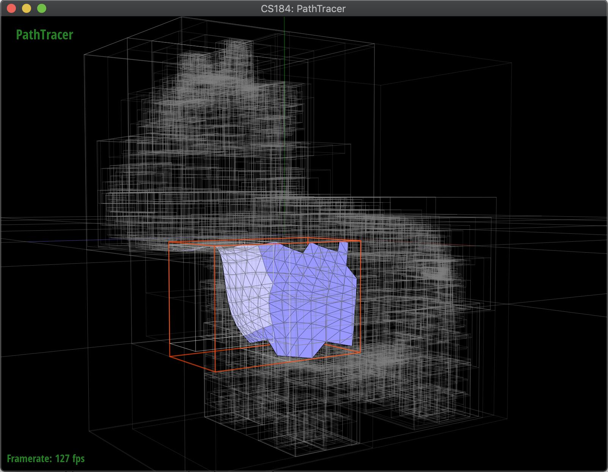
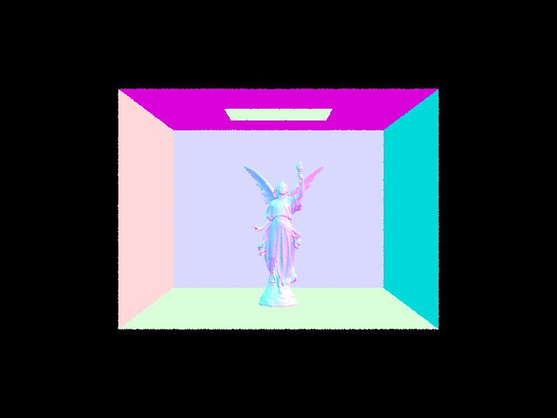

Task 0: Timing Experiment
You may notice that, even with basic normal shading, any .dae files with even mildly complicated geometries takes a very long time to render. In Part 2, we will implement a Bounding Volume Hierarchy (BVH) to speed up our path tracer so that it can render these .dae files a lot more efficiently.
For example, try running your path tracer on the following mesh from Assignment 2:
./pathtracer -t 8 -r 800 600 -f cow.png ../dae/meshedit/cow.dae
This will take quite some time to complete! The reference solution with only Part 1 completed took 40 seconds to render the image on a Hive machine. The reason rendering takes this long is because the starter code only creates a one-node BVH and stores all triangles and spheres directly into the leaf node. As we will see, a BVH constructed with just simple heuristics will still perform much better, taking ray intersection complexity from to .
Task 1: Constructing the BVH
Fill in BVHAccel:construct_bvh(...) inside src/scene/bvh.cpp.
A BVH is a binary tree. The BVHAccel class itself only contains the root node BVHNode *root. Each node in the tree contains (1) a bounding box bb, (2) left and right children l and r, and (3) two iterators start and end pointing to the beginning and the end of a list of actual scene primitives. For interior nodes, l and r are non-NULL; and for leaf nodes, start and end are non-NULL.
Recall BVH allows us to traverse the scene and quickly discard collections of primitives that a particular ray is guaranteed not to intersect. We recommend that you construct the BVH recursively.
First, compute the bounding box of a list of primitives and initialize a new BVHNode with that bounding box. If there are no more than max_leaf_size primitives in the list, the node we just created is a leaf node and we should update its start and end iterators appropriately. (Please think carefully about how you would update the iterators.) Return this leaf node to end the recursion.
Otherwise, we need to divide the primitives into a "left" and "right" collection. Remember that the primitives and their bounding boxes exist in 3D, so we want to split along the axis that gives us the most benefit. Compute the split point along this axis and use it to divide all primitives into a "left" and "right" collection based on the centroid of their bounding boxes. Set the current node's left and right children by recursively calling BVHAccel:construct_bvh(...).
You may find the following functions helpful:
Primitive::get_bbox()returns the bounding box of a primitive.Primitive::get_bbox().centroid()returns the centroid of the bounding box of a primitive.BBox::expand(...)expands a bounding box to include the function input, which can either be aVector3Dor anotherBBox.
Implementation Notes:
- Suggestions for the split point include the midpoint of an axis or the average of centroids along an axis.
- If the split point is chosen such that all primitives lie on only one side of the split point, you will get a segfault because of infinite recursive calls. (Can you reason why infinite recursive calls happen in this case?) You can handle it with any reasonable logic.
- Feel free to experiment with other BVH construction methods. Some ideas include changing the splitting heuristic (e.g., using the median primitive, using some surface area heuristic, and etc) or improving the algorithmic or memory efficiency of your BVH. See the extra credit section for more.
Sanity Check:
The GUI provides a helpful BVH visualization mode that you can use to debug your implementation. You can press V to enter this mode and you start at the root of your BVH. At any node, you can use ←, →, or ↑ to navigate to the left child node, to the right child node, or back to the parent node. The BVH visualization mode looks like the following:

Task 2: Intersecting the Bounding Box
Fill in BBox::intersect(...) in src/scene/bbox.cpp.
This function takes a ray as input and updates the input t0 and t1 with the interval of t values for which the ray lies within the box. You may use the ray and axis-aligned plane intersection equations, as well as the ray and axis-aligned box intersection method .
Task 3: Intersecting the BVH
Fill in BVHAccel::has_intersection(...) and BVHAccel::intersect(...) in src/scene/bvh.cpp.
BVHAccel::has_intersection(...) simply tests whether there is an intersection between the input ray and any primitives in the input BVH. BVHAccel::intersect(...) not only tests for intersection, but also reports the nearest intersection via the input Intersection *i structure. You can use these functions as helper functions for each other if that helps simplify your code.
The starter code assumes that the root node is the leaf node and tests the ray against every single primitive in the tree. Your improved method should implement this recursive traversal algorithm.
Implementation Notes:
- You can safely return
falseif a ray intersects with aBBoxbut itstinterval has an empty intersection with the ray's valid interval frommin_ttomax_t. However, be careful about what you pass in ast0andt1since those variables will get changed! - For
BVHAccel::has_intersection(...), you can safely returntrueafter a single intersection. However, forBVHAccel::intersect(...), you need to return the nearest intersection along the ray, so you must check every primitives in everyBBoxintersected by the ray. (Can you reason why is this true?) - If all primitives update
iandr.max_tcorrectly in their own intersection functions, you do not need to worry about updating them in your BVH intersection functions. (Can you reason why this works?) - If a ray starts or ends within a
BBox, that counts as a valid intersection
Sanity Check:
Let us go back and see how long your path tracer now takes to render the same mesh from earlier:
./pathtracer -t 8 -r 800 600 -f cow.png ../dae/meshedit/cow.dae
The reference solution took 0.173 seconds, as opposed to 40 seconds, to render the image on a Hive machine
Once Task 3 is complete, your path tracer should be fast enough to render any of our scene files in a matter of seconds (with normal shading only), even ones like dae/meshedit/maxplanck.dae with tens of thousands of triangles:
Or dae/sky/CBlucy.dae with hundreds of thousands of triangles. The reference solution took 1.67 seconds to render this image on a Hive machine.

Take a moment to refresh yourself on the deliverable requirements and conduct some performance comparison experiments of your new BVH-accelerated intersection algorithm!